Cousins, Gall, and Auntie May
Rosina Maud Andrews was born Rosina Maud Cousins, at Bermondsey, on 14 November 1881. Her mother was Annie Cousins, nee Gall. Her younger sister May Florence Cousins was Auntie May.
William Cousins and Anne Gall
William was probably baptised on 1 December 1850 at St John, Hackney, the son of William Cousins and his wife Elizabeth. At the baptism his father was a porter. In 1861 the family was probably living at Mile End Old Town, and William's brothers and sisters included Amelia. His father was a messenger in that census (St John, Hackney, baptisms, Ancestry record 2494246; 1861 census, RG9/293, folio 180, page 18, Mile End Old Town, Ancestry record 5902323).

On 15 January 1871 William was 21 and a clerk. Anne was 24. The register names his father as William Cousins, a clerk, and does not say the father was dead. Her father, John Gall, was a brewer, and he had died before the wedding. By 1881 William was a wharf foreman in Bermondsey. Annie was born about 1846 at Thetford, Norfolk. The birth index gives the mother's maiden name as Gall, or Galle, for all eight children, so the maiden name is certain.
Annie probably died in the September quarter of 1900 in the West Ham district, volume 4a, page 76, aged 53. She is gone by the 1901 census. William was later a dock labourer. In 1921 he was a retired dock labourer, living with Rosina and Henry George at Plaistow. He probably died in the December quarter of 1922 in the West Ham district, volume 4a, page 53, aged 71. Where John Gall himself came from has not been settled, and the guesses are not used here. By 1911 William Cousins, a widower of 61 and an assistant dock foreman, lived at 23 Sutton Court Road, Plaistow, with his unmarried daughter Amelia Ann, 34. This is the house where Rosina and Henry George later lived with him, and where they were killed in 1941. On the census form William first filled in that he had had 8 children, 7 of them still living; the figures were crossed out, as that question was meant only for married women, but they match the eight children of the 1891 census.

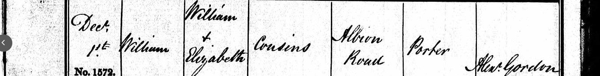

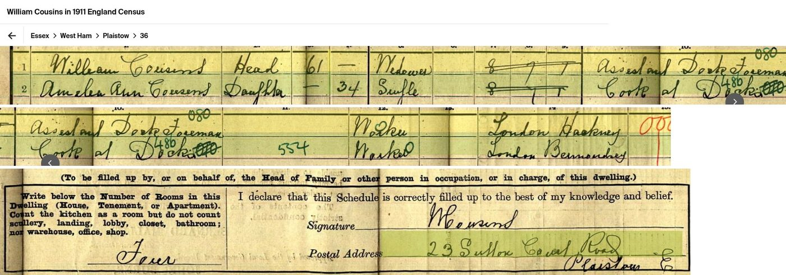
The eight children

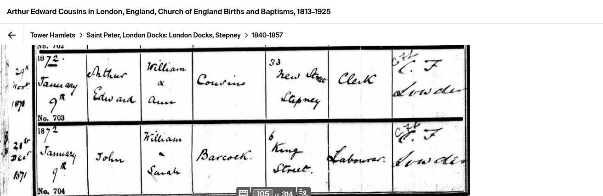

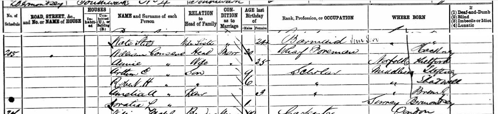

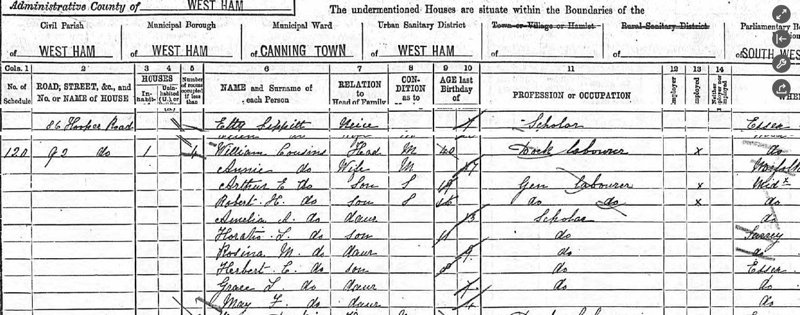

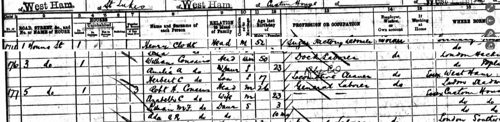

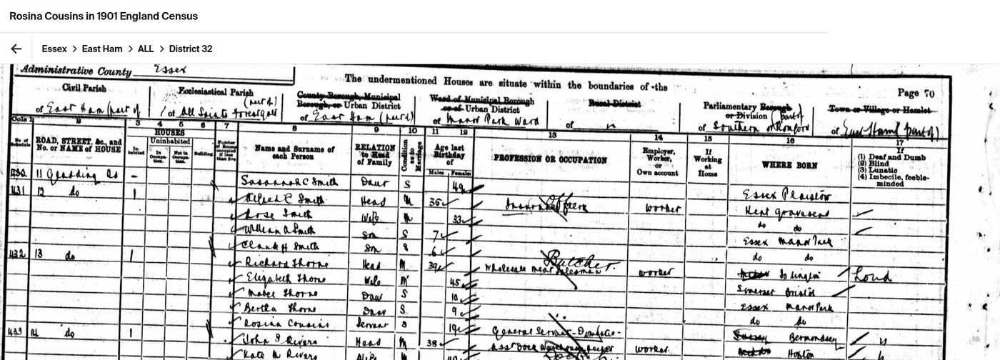

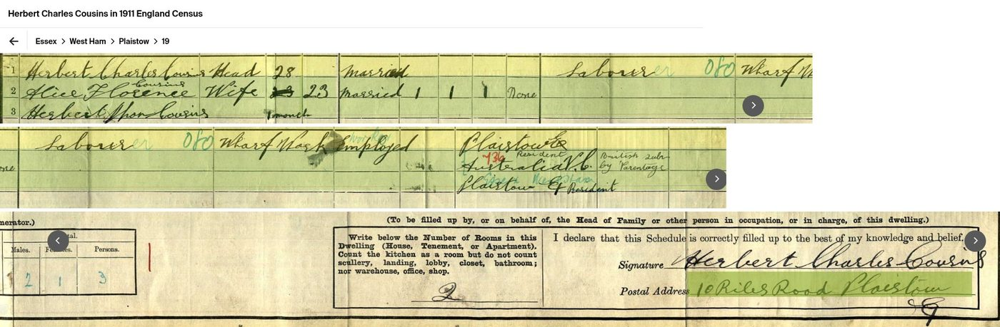
- Arthur Edward, late 1871, Mile End Old Town. Baptised 9 January 1872 at St Peter, London Docks. Mother Ann. The family has it written down that he died in 1912, drowned in the Victoria Docks (family statement). The death index has Arthur E Cousins, aged 40, registered in the West Ham district in early 1912 (January to March quarter), volume 4a, page 136, which fits his age and the docks; probably him. No inquest report has been found yet.
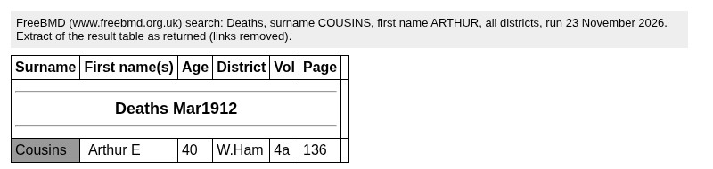
FreeBMD death index, March quarter 1912: Cousins, Arthur E, 40, West Ham, 4a 136. Source: FreeBMD, www.freebmd.org.uk (search Deaths, Cousins, Arthur). View the original - Robert Henry, late 1874, Stepney.
- Amelia Annie, summer 1877, Poplar, volume 1c, page 597, mother Galle. Single in 1911, a cook. She probably died in the West Ham district in early 1915, aged 37.
- Horatio Lionel, summer 1879, St Olave. The 1881 census writes Horatia.
- Rosina Maud, 14 November 1881, Bermondsey. In 1901 Rosina, 19, was in service as a general servant to Richard Thorne, a wholesale meat salesman, and his family at 13 Gladding Road, Manor Park, East Ham. Registered at St Olave Southwark, December quarter 1881, volume 1d, page 292. Married Henry George Andrews at St Andrew's, Plaistow, on 18 April 1915. Killed at Plaistow on 19 April 1941, aged 59.
- Herbert Charles, 1883, West Ham, volume 4a, page 104. The 1939 Register gives 1 April 1883. He married Alice Florence Hillyear in 1910, in the West Ham district. They had a son, Herbert John, born in early 1911. In 1911 Herbert Charles, 28, a labourer at a wharf, lived at 10 Riles Road, Plaistow, with his wife Alice Florence, 23, who was born in Victoria, Australia, a British subject by parentage, and their son Herbert John, one month old. Herbert Charles later lived at Halstead, Essex, and he probably died in the Braintree district in early 1953, aged 69.
- Grace Lilian, spring 1884, West Ham. Her later life has not been settled, and the loose candidates are not used here. In 1921 two of the sisters worked at the East Ham Isolation Hospital: May as a ward maid and, probably, Grace as a housemaid.
- May Florence, spring 1886, West Ham, volume 4a, page 167. Auntie May.

Auntie May
May Florence Cousins

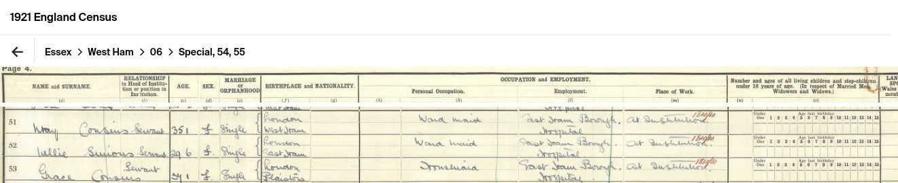

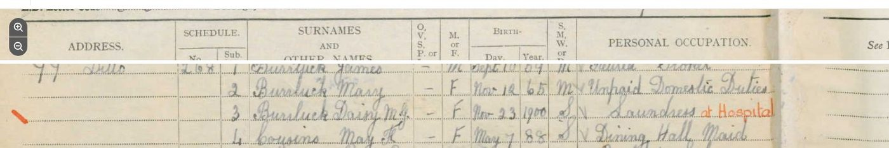

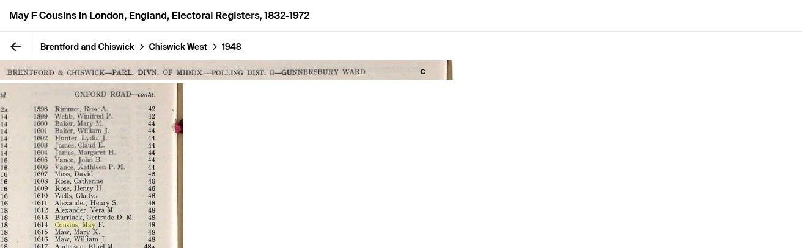

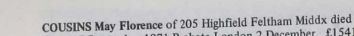
She never married. In 1921 she was 35, a ward maid at East Ham Isolation Hospital. She later worked at Ealing, and in 1939 she was a dining hall maid at Colchester. From 1948 to 1967 the electoral registers place her at Chiswick and Gunnersbury, and then at Feltham. She died on 27 September 1971. The estate was 1,541 pounds.
This matches the aunt Amanda remembered: elderly, never married, a visitor, and living at Chiswick. She was Rosina's younger sister, so she was Ron's aunt. She was probably also the Auntie May named in the 1950 wedding captions, though that last step is not proved. Minnie Bennett, on Pat's mother's side, is a different person.
The Andrews line that Rosina married into is on the Andrews, Stacey and Walter page. Citations are on the sources page.